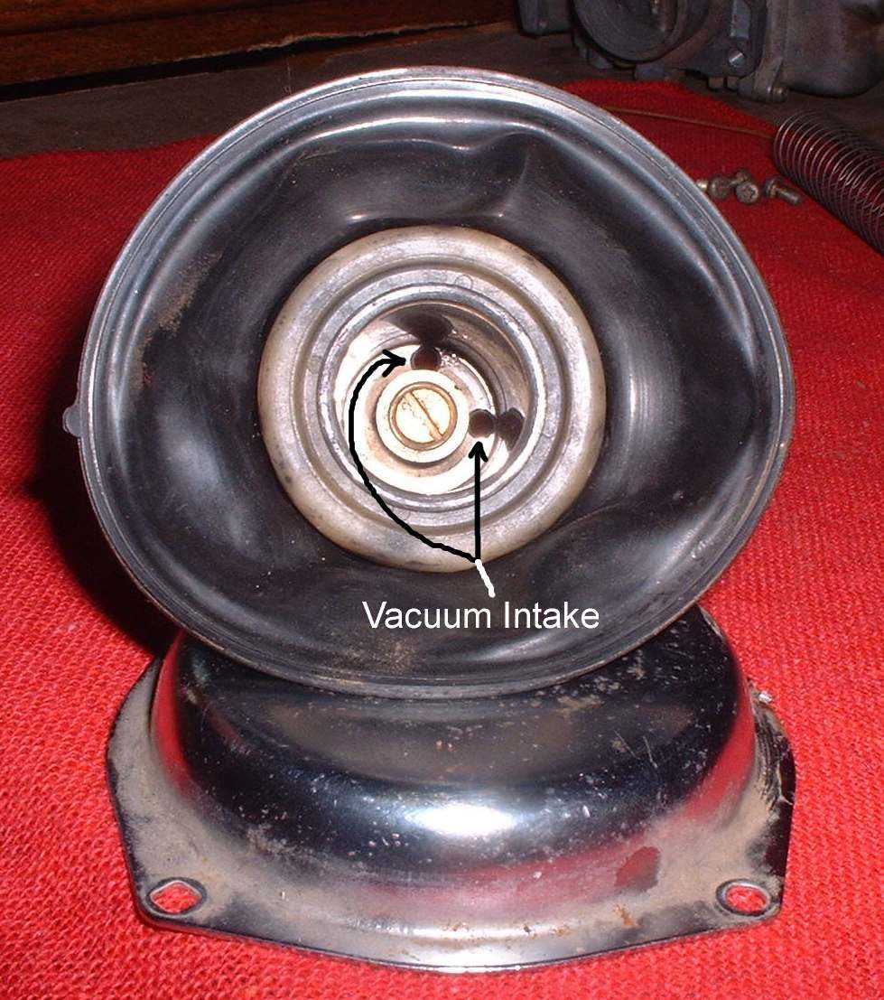
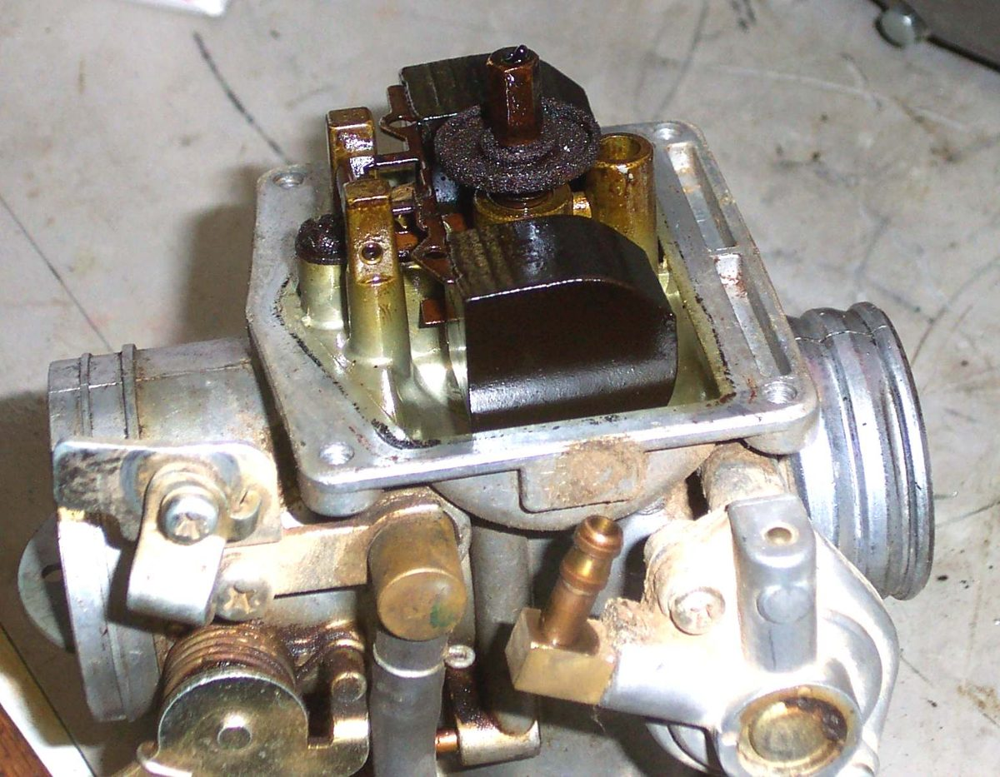

Many carburettors have a vacuum-operated slide. The slide is joined to a round rubber diaphragm, and engine vacuum lifts it as the throttle opens. A hole or tear in the diaphragm lets air in, the slide lifts slowly or not at all, and the engine feels weak. A common sign is an engine with good compression that starts well but revs up very slowly.
Safety
- Fuel is flammable. Turn the tap off and work away from flames.
- Do not spray carburettor cleaner on the rubber. It softens or hardens the diaphragm.
You need
- The manual for the carburettor, a clean rag and a bright light.
- A replacement diaphragm and slide assembly if damage is found. Use genuine carburettor maker parts if possible.
Steps
- Remove the carburettor if needed. See Remove and refit a carburettor with stiff rubber boots.
- Take off the top cover. Note that the cover has a spring. Hold it as you undo the screws so the spring does not fly.
- Lift out the slide with the diaphragm. Check that the diaphragm lip sits in its groove when refitting.
- Hold the diaphragm to the light and flex it gently. Look for holes, cracks and a hard, shiny, brittle look. Check the area where the rubber meets the slide.
- Wipe the slide with a rag dampened with carburettor cleaner. Keep the cleaner off the rubber.
- Check that the slide moves freely in the bore with no scoring or sticking.
- If the diaphragm is damaged, fit a new one. Diaphragms are costly. Some people paint on a flexible rubber coating as a repair, which may work for a while, but a new part is better.
- Refit the slide with the notch in the right place, then the spring and the cover. A slide fitted wrongly can jam open.
Check your work
- The slide lifts easily with your finger and drops back smoothly.
- The engine now revs freely and pulls from low speed.
If it did not fix the problem
- Blocked jets or an air leak: Clean the carburettor and Find an intake air leak.
- Wrong mixture: Engine runs lean.